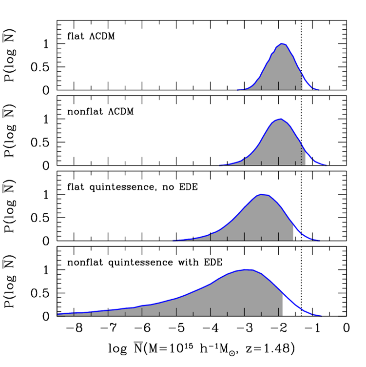
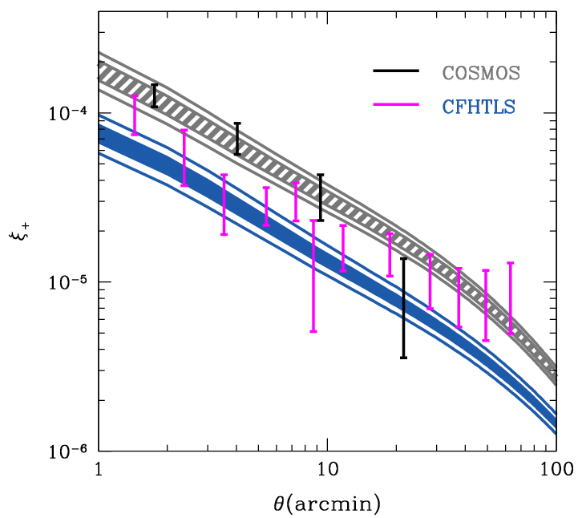

|
|
|
I am a postdoc at UC-Berkeley and an affiliate of LBNL.
Currently, I am working primarily with Uros Seljak on finding methods to improve
constraints on cosmological models using observations of the
large-scale structure of the Universe.
My research interests span a variety of topics in theoretical cosmology, including
tests of dark energy models and signatures of reionization and
inflation in the cosmic microwave background. Previously,
I was a CCAPP postdoctoral fellow
at Ohio State.
I completed my Ph.D. in physics at the University of
Chicago, and before that was an undergraduate in Course 8 at MIT.
A few recent results from my research are summarized below. For more details,
click on the links to my publications and talks in the sidebar on the left.
|
|
|
|
Observational Probes of Cosmic Acceleration
|
|
Collaborators: David Weinberg, Daniel Eisenstein, Chris Hirata, Adam Riess, Eduardo Rozo
Preprint: arXiv:1201.2434
Our review of observational methods for studying cosmic acceleration and
improving constraints on theories of dark energy and modified gravity is
now available on arXiv.
We hope this will be a useful resource for graduate students and other
researchers who are interested in learning about the basic observational
techniques. In the review, we summarize the basic principles,
the current status of observations, and the main challenges that future
experiments are likely to face for
Type Ia supernovae, baryon acoustic oscillations, weak gravitational
lensing, galaxy cluster abundances, and other probes of acceleration.
We also present a new, comprehensive set of forecasts for the constraints
on cosmological parameters that these observational methods will provide
within the next 5 to 10 years.
|
|
|
Consistency tests of dark energy theories
|
|
Collaborators: Wayne Hu, Dragan Huterer, Ali Vanderveld, Tim Eifler
Papers:
[1],
[2],
[3],
[4],
[5],
[6]
Two of the main methods we have to try to understand cosmic acceleration
are measurements of cosmological distances as a function of redshift and
measurements of the growth of large-scale structure in the universe.
Both distance and growth are affected by theories of dark energy or
modified gravity that attempt to explain cosmic acceleration, but
some theories that make the same predictions for distances make different
predictions for growth, and vice versa. So, by measuring distances and
growth, we can distinguish among the different theories.
Typically, distances are easier to measure accurately than the growth of
structure. Distance indicators such as Type Ia supernovae (SNeIa),
baryon acoustic oscillations (BAO), and the cosmic microwave background
(CMB) currently measure the distance-redshift relation with an accuracy
of a few percent or better over much of the history of the universe.
For the simplest theory of cosmic acceleration, a spatially flat universe with
a cosmological constant and cold dark matter (flat ΛCDM),
we found that these measurements of distances can be used to
make predictions for the growth of structure with percent-level
precision.
The figure on the right shows the flat ΛCDM predictions from
current SNeIa, BAO, and CMB data, plus a measurement of the Hubble
constant (H0). Shading shows the regions with 68%
confidence level (CL), and solid curves mark the boundaries of the
95% CL regions. The top panel shows predictions for the growth function
G and for the same function with an alternate normalization
G0, the middle panel shows predictions
for the differential growth rate fG and the growth index γ
(often used as
a diagnostic for modified gravity), and the bottom panel shows predictions
for the extrapolation of distance D to high redshifts
and for the Hubble expansion rate H.
Continue reading...
|
|
For other models of dark energy besides flat ΛCDM or for modified
gravity theories, the predictions for the growth of structure from
measured distances are different and typically weaker. By comparing
actual measurements of growth with the predictions from different
theories of cosmic acceleration, we can attempt to falsify the theories
that are incorrect. Although growth measurements from
presently available data is relatively imprecise, determining quantities
like G and fG with about 10% accuracy, several cosmological
surveys that are in progress or scheduled to begin soon will provide
much stronger constraints on the growth of large-scale structure.
One method for measuring the growth of structure is to count the number
of galaxy clusters over some range of redshifts with masses above a
certain threshold mass. Since clusters take time to form and to grow more
massive, at earlier times (higher redshift) or at a larger threshold mass
we expect to find fewer clusters. For large enough redshift and mass limits,
the number of expected clusters drops to essentially zero.

However, the expected number of clusters depends on our theory of
cosmic acceleration; even if one theory predicts that we shouldn't find any
clusters above a certain mass and redshift, for a different theory that predicts
more structure growth (larger G or fG) we might expect to
observe a handful of such massive, distant clusters. By comparing the number
of clusters we actually find with the predictions from different theories,
we can separate incorrect theories from those that are consistent
with the observations.
The figure on the left shows the expected number of clusters above a
mass of 1015h-1M⊙ and a
redshift of z=1.48 for four different cosmological models.
Since there is uncertainty in the expected abundance due to the
uncertainty in the growth predictions, each panel shows a probability
distribution (blue curves) for the logarithm of the average number of clusters
that one would expect to find in the whole sky.
The top two panels show the expected cluster abundance for ΛCDM,
in either a spatially flat or curved universe. In the case of flat ΛCDM,
for 95% of the models (shaded gray region) there is a 5% or less chance
of observing one or more clusters above the mass and redshift thresholds
(dotted line). The predictions for the nonflat models are very similar.
The lower panels consider a more general class of dark energy models
called quintessence, where the equation of state of dark energy
can vary with redshift over the range −1≤w≤1 (as opposed
to w=−1 for the cosmological constant). Panel 3 assumes
spatial flatness and that there is no dark energy in the early universe
(roughly z>2), while panel 4 drops both of these assumptions.
In every case, we find that the expected number of clusters is either the
same as or less than the number expected for the simplest theory,
flat ΛCDM. Therefore, we can conclude that if we discover
that more clusters exist than what flat ΛCDM predicts,
then we could rule out not only this simplest model but also the other
three alternative models as possible explanations for cosmic acceleration.
Other theories of dark energy or modified gravity not included in
this figure could still explain such an observation.
The basic reason why quintessence models predict fewer clusters than
a cosmological constant does is related to the restriction on the
quintessence equation of state, −1≤w≤1. Since
quintessence models can only have an equation of state greater than or
equal to
that of ΛCDM with w=−1, the energy density of
dark energy in those
models can only be greater than or equal to the cosmological constant density.
Dark energy tends to suppress the growth of structure, so a larger
dark energy density implies lower growth, which results in fewer
galaxy clusters. If we observed massive, distant clusters that ruled
out the ΛCDM and quintessence theories, a dark energy model with
equation of state w<−1 might provide an
alternative explanation.

We have also used these methods to make
predictions for weak gravitational lensing,
specifically observations of the angular power spectrum or correlation function
of cosmic shear. The figure on the left shows the predicted shear correlation
function for two distributions of source galaxies based on the observed
distributions from the COSMOS (gray shading) and CFHTLS (blue shading)
surveys, assuming the flat ΛCDM model. The error bars show the actual
measurements from these surveys, which are consistent with the predictions.
Many of the parameters that we need to know to make these predictions will
soon be measured much better using CMB data from the Planck satellite,
so we expect the predictions for cosmic shear will become several times more
precise in the near future.
So far, all cosmological observations appear to be consistent with
the simplest theory of acceleration. As we collect more data, however,
we will have more opportunities to test the predictions of the
flat ΛCDM model. If future observations of galaxy clusters,
weak lensing, or other probes of the growth of structure
find evidence against ΛCDM, it would be a huge
breakthrough in our efforts to understand cosmic acceleration.
|
|
|
Signatures of reionization in the CMB
|
|
Collaborators: Wayne Hu, Cora Dvorkin, Hiranya Peiris
Papers:
[1],
[2],
[3],
[4],
[5],
[6],
[7]
During the epoch of reionization, hydrogen atoms in the intergalactic
medium are ionized by radiation from the first stars and quasars.
The resulting free electrons rescatter photons
from the CMB, reducing the amplitude of CMB temperature anisotropies and
generating additional CMB polarization anisotropies on large scales.
The effect on the angular power spectrum of the CMB temperature
(CℓTT) is difficult to distinguish
from changes to the amplitude of primordial fluctuations from inflation,
but in the E-mode polarization power spectrum
(CℓEE) reionization produces a
detectable feature on large scales (low ℓ). From WMAP measurements
of the amplitude of this feature, we know that the total optical depth
to reionization is approximately τ=0.09, which implies that
reionization occurred at a redshift of about 10.
While measurements of CℓEE can
determine the total optical depth τ fairly well, it is more difficult to
tell whether the transition from a neutral medium to an ionized medium
happened quickly or slowly. The figure on the right shows two very
different ionization histories with similar values of τ (see inset)
and their corresponding polarization power spectra. Although there are
clear differences in the spectra at ℓ<30, data from WMAP are
not precise enough to distinguish between these models
(see points and error bars,
showing 3-year WMAP data). Until the large-scale polarization measurements
improve with data from upcoming experiments like Planck, the detailed
evolution of the ionized fraction during reionization will remain
largely unknown. Given this uncertainty, most analyses of CMB data
assume a simple form for the ionization history (e.g., an instant
transition).
In a series of papers, we studied the impact of this uncertainty in
the ionization history on the estimated values of cosmological parameters
using a general parametrization of the ionization history based on
principal components. With current WMAP data, the impact is fairly
small: relative to an analysis that assumes instant
reionization, accounting for uncertainty in the ionization history
slightly increases both the central value of the estimated optical depth
(to about 0.10) and the uncertainty in τ. Even this small change
can significantly affect parameters correlated with τ.
For example, evidence for deviations from a scale-invariant primordial
power spectrum weakens when reionization uncertainty is considered.
Future CMB polarization measurements from Planck and other experiments
will improve constraints on reionization but will also
be more susceptible to assumptions about the form of the ionization history;
for Planck, accounting for uncertainty in the evolution
of the ionized fraction is expected to increase the error on τ from 0.005
to 0.01.
Continue reading...
|
|
Although they correspond to very different physical processes occurring
at different epochs in the history of the universe, reionization and
inflation both affect the CMB power spectra on large scales, so it
is important to understand how uncertainties in one can weaken or
bias constraints on the other. We found that assuming
an incorrect reionization history could
bias constraints on standard inflationary parameters from future
measurements of the large-scale B-mode polarization spectrum.
We also explored the impact of reionization
uncertainties on constraints on more exotic theories of inflation
that are motivated by anomalies in the observed CMB temperature
power spectrum, including a cutoff in the inflationary power
spectrum on large scales and models with a sharp step in
the inflationary potential.
Simulations and analytic studies of reionization predict that it
should be a highly inhomogeneous process, with ionized bubbles growing in
an initially neutral medium and eventually merging with each other.
This patchiness modulates the usual temperature and polarization
anisotropies of the CMB, producing additional signals that can
be used as complementary probes of reionization.
By relating the effects of patchy reionization on the CMB temperature
and polarization anisotropies on small scales,
we found that recent data from the South Pole Telescope
set an upper limit on the contribution of patchy reionization
to the CMB polarization power spectra, shown in the figure on the left.
Combining this constraint
with measured upper limits on the B-mode spectrum on
larger scales also limits the size of ionized bubbles during
reionization. This study built on
earlier work where we computed the maximum
possible CMB polarization signal from patchy reionization;
a large reionization contribution to the
B-mode component of the polarization could contaminate
the signal from inflationary gravitational waves.
|
|
|